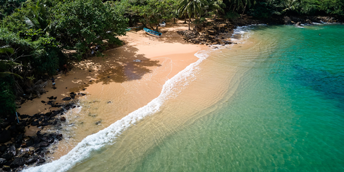

2. Jungle Beach |
|  |
Jungle Beach is a beautiful bay tucked in a forested environment located west of Unawatuna. It is one of Sri Lanka's hidden jewels, with everything you need to make your vacation remember. Due to its quiet location, the site preserves its pristine natural charm all year.Water sports such as snorkelling, scuba diving, swimming, boat rides, and more are available at Jungle Beach. The reefs that stick out of the water a few meters offshore are a good spot for snorkelling, as they present you to the region's unusual marine life. You'll see moray eels, crabs, barracudas, triggerfish, and a variety of other reef-dwelling critters in addition to schools of colourful fish. Whale watching, exploring ancient sites, jungle hiking, and many more things are available in Jungle Beach. |
Distance from Katunayaka Airport : 150 km and it takes about 2 to 2 ½ hours |